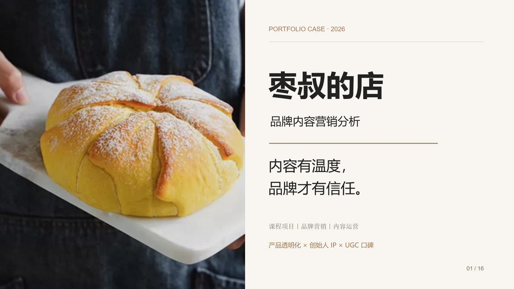
↓
Scroll to view full project
Content Marketing / Brand Growth
枣叔的店
内容营销分析
2026
- Category
- Content Marketing
- Role
- Research / Strategy / Presentation
- Format
- 16 Slides
围绕缺少传统品牌背书的“白牌”电商食品品牌，分析其内容生产、平台分发、内容产品与购买转化链路，并从产品透明化、品牌人格与用户口碑中提炼消费者信任的建立机制。
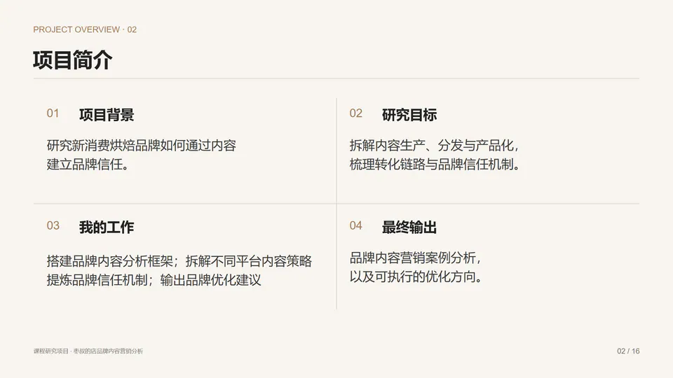
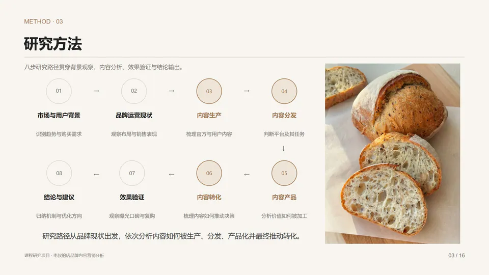
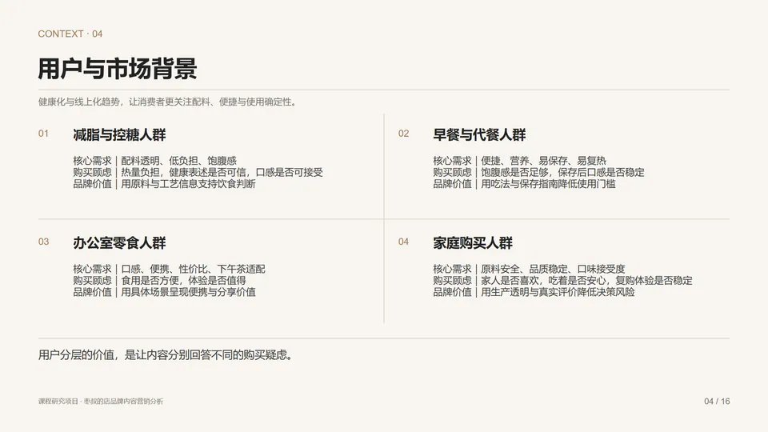
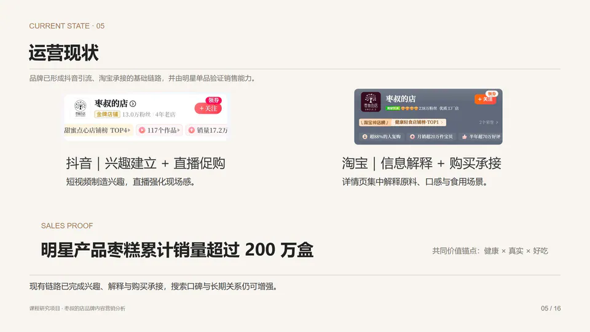
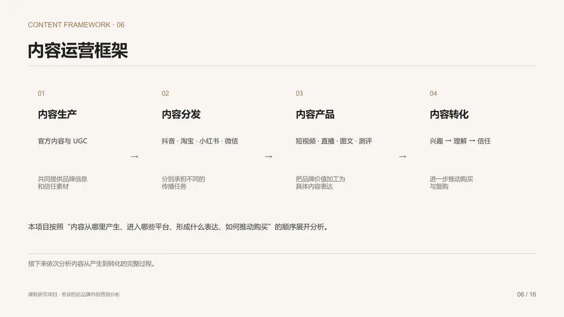
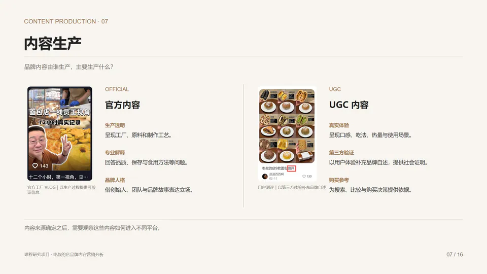
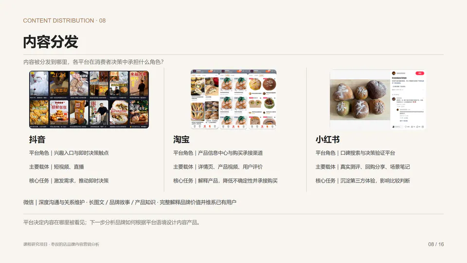
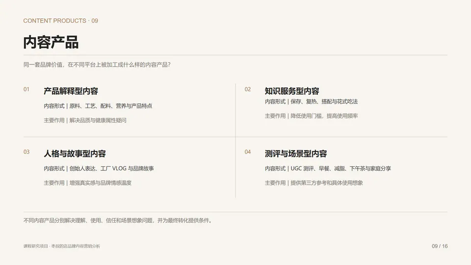
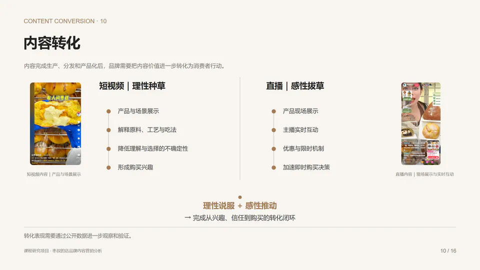
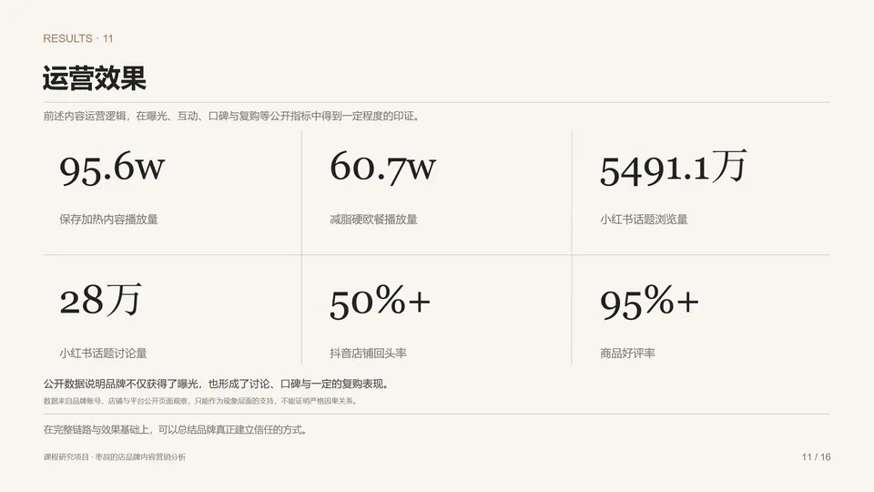
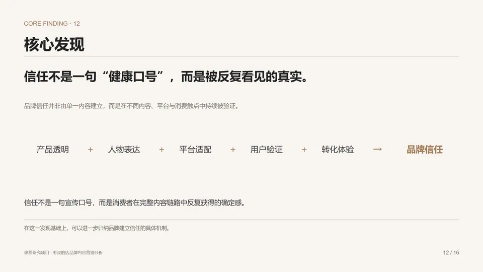
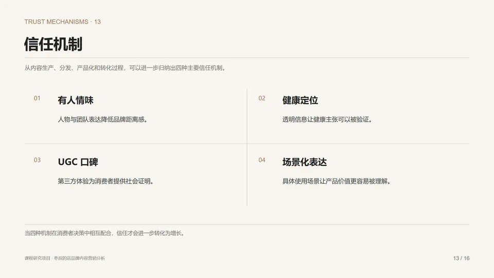
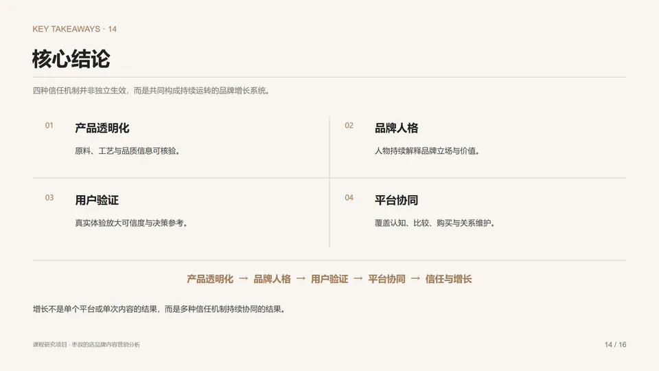
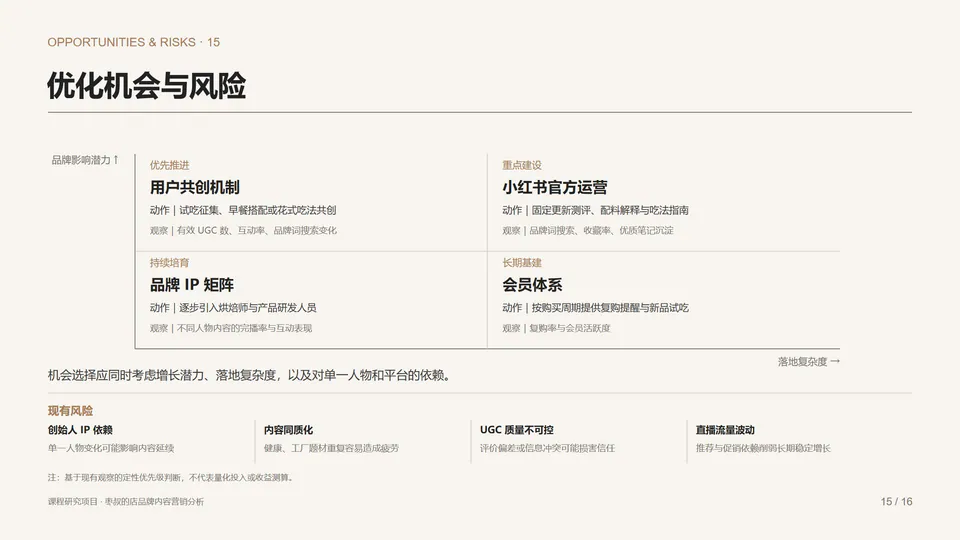
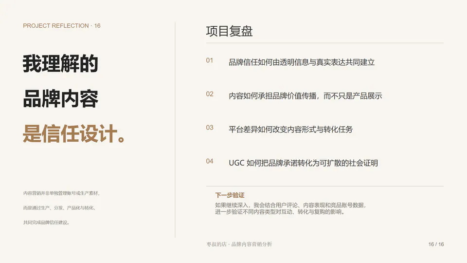